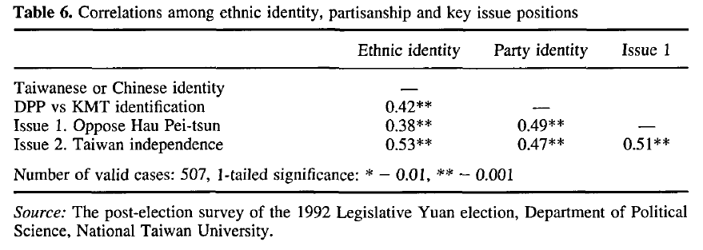

收录于合集
#政治态度 13 个
#民主与民主化 34 个
#比较政治学 121 个
文献来源： Hu Fu & Yun Han Chu. Neo‐authoritarianism, polarized conflict and populism in a newly democratizing regime: Taiwan’s emerging mass politics, Journal of Contemporary China , Vol.5,No.11(1996), pp.23-41
作者简介： 胡佛，籍贯浙江杭县，寄籍江苏江都，生前曾为中国台湾“中央研究院”首位政治学专业院士，台湾大学政治学系名誉教授，中国社会科学院名誉高级研究员。
朱云汉，籍贯浙江诸暨，中国台湾“中央研究院”第二位政治学专业院士兼政治学研究所特聘研究员，台湾大学政治学系教授。
胡佛（左）朱云汉（右）
与分析全球范围内民主运动和发展中国家威权政体出现危机的观点截然不同，中国台湾地区在朝向民主转型的过程中至少面临四组结构性障碍。首先，台湾地区先后受到清朝政府统治，日本殖民统治以及中国国民党威权统治，从未有过民主经验，缺少民主的制度基础。因此，台湾政体的转型性质在于民主化而不是再民主化。
其次，在拉美地区诸国中，当军人政权统治难以为继时，军人们可以退回营房等待时机卷土重来，而台湾地区的政治转型前的政体形态则是国民党打造近40年的 “党国体制”。在这种结构下，国民党在组织和人事方面都融入了“国家”，对大众媒体、军队、司法和官僚机构的控制已经制度化，致使台湾民主化在“国家”与政党的分离层面存在障碍。
再者，台湾的制度变迁与潜在的族群冲突紧密相连。在旧体制下，国民党苦心经营起来的权力结构长期为来自中国大陆的外省人所掌握。民主化带来的政治参与扩大使得政权从外省人转移到本省人手中。因此，持极端倾向的反对派与现任本土精英之间都会因为彼此的政治利益而拒绝现有政治制度发生任何根本改变，导致国民党本土化的形势日趋复杂化。
最后，在旧体制下，外省精英通过坚持“一个中国”原则来使自身的统治合法化。所以反对派争取民主改革和权力的再分配不可避免地要引发民族身份与两岸关系的冲突。因此，国民党威权统治的裂解带来的不仅仅是政治合法性的危机，更危及了“国家”的合法性——国民党当局对代表中国主权地位、管辖权边界和公民身份的主张。
因此，尽管民进党和新党的先后通过选举挑战了国民党的统治地位，在既有宪制下改选并重组民意机关——“国民大会”和“立法院”以吸纳更多的本省人参政；全省先后举行了第一次关于省长和当局领导人的全民选举，释放政治犯，李登辉与连战的上台以及郝柏村的去职，但鉴于这些结构上的限制和政治上的复杂情况，台湾的民主化将沿着漫长而充满冲突的道路前进，其远未达到民主巩固的水准。
首先，排除反对的声音使得当局通过“宪法”增修条文徒增专断的色彩。其次，在国民党主导的改革中保留了许多残余的威权主义分子。国民党领导层将民主改革的范围局限为Terry Lynn Karl所称的“选举主义”。被废除的“动员戡乱临时条款”中的一些关键要素也即威权统治的标志，包括领导人在紧急状态下行使的权力和设立的“国家安全”机构，被移植到新的增修条文中。这样，台湾地区领导人能继续以伪总统的特权和名义掌控军事和安全机关，逃避立法机关的兼督。
此外，对台湾地区民主巩固构成的最大障碍在于涌现出来的大众政治。不仅如此，台湾政治文化和公民政治呈现出三大趋势：大众对民主合法性的信念发展不均衡，政治分裂极化与政治转向民粹主义。因此，尽管在发展形式的民主制度上取得了显而易见的进步，但是包括言论自由和正当程序在内的政治自由，意味着议会监督和司法独立的权力分立，尚未成为台湾选民心目中普遍的民主价值观。第二，对国家认同的极化冲突可能导致内部的族群冲突和外在的军事干预。第三，对代议机关缺乏信心以及较低的政治宽容程度构成了对宪政发展的严峻挑战。
基于此，本文将运用台湾大学政治体系与变迁研究工作室主持的调查数据对上述情况展开分析探讨。
民主合法性发展不均衡
与西方自由民主政体不同，在第三世界中的大多数社会中，政治合法性问题极具争议性，往往是政治分裂和制度不稳定的根源以及在幕后驱使诸多行动者的动力。因此，不仅仅对台湾而言，也包括对许多其他处于转型中的社会而言，在国家（即政治共同体）的合法性和政权合法性两个关键领域发生冲突的社会价值观是理解政治危机性质、民众的渴望和不满以及党派冲突的关键。但是西方既有的政治文化研究主要集中于政治效能感、公民责任感、政治利益和政治信任对民主稳定的重要性等领域的讨论，不足以解释许多非民主社会特别是政权过渡时期社会的复杂性和流变。因此，作者将政权合法性概念化为管理社会的政治权力和权威组织规范性原则的价值取向，测量结果分别如表1-2所示：
政治冲突极化
台湾的民主转型不仅仅涉及到国民党政权的合法性危机，它进一步上升到“国家”合法性层面。台湾在民主转型期间，浮现出一些普遍存在的结构性特征：一方面，它限制了反对派提出另外一套社会经济政策议程的能力。另一方面，这些普遍存在的条件促成了亚族群分裂的政治化和民族的认同危机，二者的并行发展反过来加剧了民主改革的冲突。与同时期许多拉美独裁政权实行的进口替代战略不同，台湾地区在进行民主转型之前，已经实行出口导向型的工业化（EOI）战略二十多年，国民党政权享有更为广泛的社会支持。同时，大众对权力再分配的需求进一步推动了政治变革。因为在国民党经营的党国体制下，全岛的权力结构长期为来自中国内地省份的精英把持，几十年来，国民党政权证明其统治的合法性理由完全建立在“一个中国”原则的基础上。因此，在民主化进程中，反对派便通过动员一方面在反对国民党独裁统治的同时，一方面加剧了族群间的冲突与民族认同的分裂。也因为台湾社会相对没有高度的财富分配冲突，反而极有可能被反对派利用并转化为极化的左右分裂。因此，正如表3-表6所示，台湾从民主转型的一开始，关于改革和国家认同的冲突就取代了社会经济公平的问题成为最主要的议题。

政治转向民粹主义
台湾民众的民粹主义情绪表现在对政治持相左立场群体的低度容忍和新的代表机构的不信任。由此，台湾的民主被无限地庸俗化。一方面，政客们把民众投票视作包治百病的“神药”。但是正如表7-表8所示，大多数台湾选民的政治容忍度都很低，致使持续大规模的集体行动越来越多，以至于它几乎成为台北街头日常生活的图景。另一方面，如表9-表10所示，很大一部分选民对新的代议机关乃至整个政治制度少有信心。但与此同时，他们盲目崇拜具有超凡魅力的政治人物，希望他们提升“人民的力量”，将正义掌握在自己手中。然而这种解释仍然没有触及台湾问题的本质，因为掌握行政权力的领导人往往享有更高的民众认可率。因此，必须根据另外一个重要趋势来给新兴民主祛魅：李登辉的迅速崛起。
由于李登辉加快推进国民党本土化改造以缓解民众对国民党长期独裁统治的不满，迎合民众的情绪，例如向在“二·二八”事件中的罹难者道歉恢复了台湾人的骄傲和自尊，主张“中华民国政府”在国际社会中享有独立的“主权”地位······李登辉通过党派媒体动员民众支持所谓的改革议程，然后通过政府或党的决策过程推动它，将它包装成“受欢迎的需求”。李登辉不仅受到绝大多数台湾人的崇拜，而且被视为台湾民众的“荣耀”，以至于媒体创制所谓的“李登辉情结”一词来形容这一现象。由此，李登辉的压倒性人气使得许多人赞同他主导的一系列“宪法”增修条文制定，这些增修条文在大大扩展领导人职权的同时削弱了内阁和立法机关，从而使当前宪制的运作变得比以往任何时候都更依赖于领导人的自我约束而非外部的制衡。
结论
在台湾地区的民主转型进程中，新威权主义、极化冲突与民粹主义这三项特征密切相关。首先，民众在多元价值观、政治自由和权力分立以及对代议机构缺乏信心等民主态度方面有赖加强。其次，台湾民众对国家认同日趋两极化的冲突具有潜在的危险性，可能导致内部的族群冲突和外部的军事干预。此外，因为根本无法将有关民族认同的冲突此类问题纳入宪制予以消除，所以在当权派与反对派之间、国民党主流派与非主流派之间的政治谈判变得更为复杂棘手。此外，新的执政当局利用权力建立新的霸权，试图将自己的愿景——“台湾民族主义”强加于人，它们共同构成了对台湾地区民主巩固的严重威胁。
编译：杨端程
编辑：吴温泉
审读：赵德昊


“广告点一点，也是支持学术公益 ”
”
政文观止
微信扫一扫赞赏作者 __赞赏
已喜欢，对作者说句悄悄话
取消 __
发送给作者
发送
最多40字，当前共字
上一页 1/3 下一页
长按二维码向我转账
受苹果公司新规定影响，微信 iOS 版的赞赏功能被关闭，可通过二维码转账支持公众号。